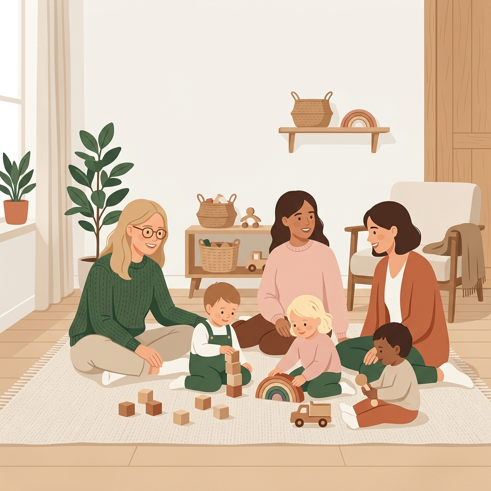
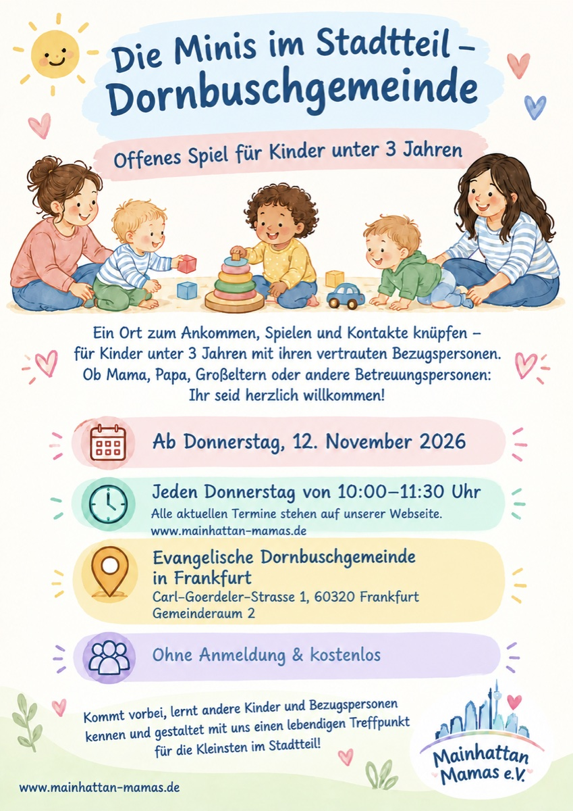

Minis im Stadtteil
offenes Spiel für Kinder unter 3 Jahren
Ein Ort zum Ankommen, Spielen und Kontakte knüpfen: Bei den „Minis im Stadtteil“ sind alle Kinder unter 3 Jahren gemeinsam mit ihren vertrauten Bezugspersonen herzlich willkommen. Ob Mama, Papa, Großeltern, Tagespflegefamilie oder andere Betreuungspersonen – wir freuen uns auf euch!
Im geschützten und kindgerecht gestalteten Rahmen dürfen die Kleinsten frei entdecken, spielen und erste Kontakte zu anderen Kindern sammeln. Offenes Spiel bedeutet dabei: Kinder folgen ihren eigenen Interessen, ihrem Tempo und ihrer Neugier. Erwachsene begleiten aufmerksam, geben Sicherheit und können gleichzeitig erleben, was die Kinder gerade bewegt.
Während die Minis spielen, entsteht für die Großen Raum für Austausch, neue Begegnungen und gegenseitige Unterstützung. Ohne Leistungsdruck, ohne festes Programm – dafür mit Zeit, Offenheit und Gemeinschaft im Stadtteil.
- Für wen: Kinder unter 3 Jahren mit Bezugspersonen
- Konditionen: Ohne Anmeldung & kostenlos
- Wann: Donnerstags, 10:00 – 11:30 Uhr
- Start: Los geht’s am Donnerstag, 12. November 2026
- Termine 2026: 12.11., 19.11., 03.12., 10.12. und 17.12.
-
Ort: Evangelische Dornbuschgemeinde
Carl-Goerdeler-Strasse 1, 60320 Frankfurt
im Gemeinderaum 2
Kommt vorbei, lernt andere Familien und Betreuungspersonen kennen und gestaltet mit uns einen lebendigen Treffpunkt für die Kleinsten im Stadtteil!

Flyer zum Weitergeben
Kennst du Familien mit Kleinkindern? Teil den Flyer einfach – zum Beispiel per WhatsApp.
Das ist erst der Anfang.
Mainhattan Mamas wächst Schritt für Schritt gemeinsam mit euch.
Weitere Treffpunkte, Angebote rund um Schwangerschaft und Wochenbett sowie neue Formate zum Mitmachen sind bereits in Vorbereitung.
Trag dich kurz ein: Wir melden uns nur dann, wenn es zu deinen Themen konkrete Neuigkeiten gibt – kein Newsletter, kein Spam.
Bleib mit Mainhattan Mamas verbunden
Wähle aus, was dich gerade betrifft. So informieren wir dich gezielt, sobald passende Termine oder neue Angebote starten: